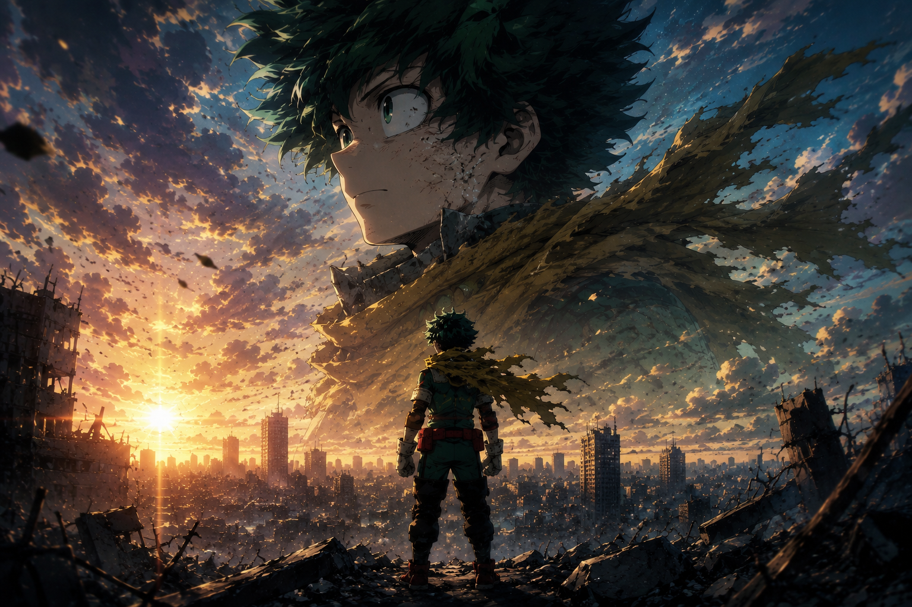
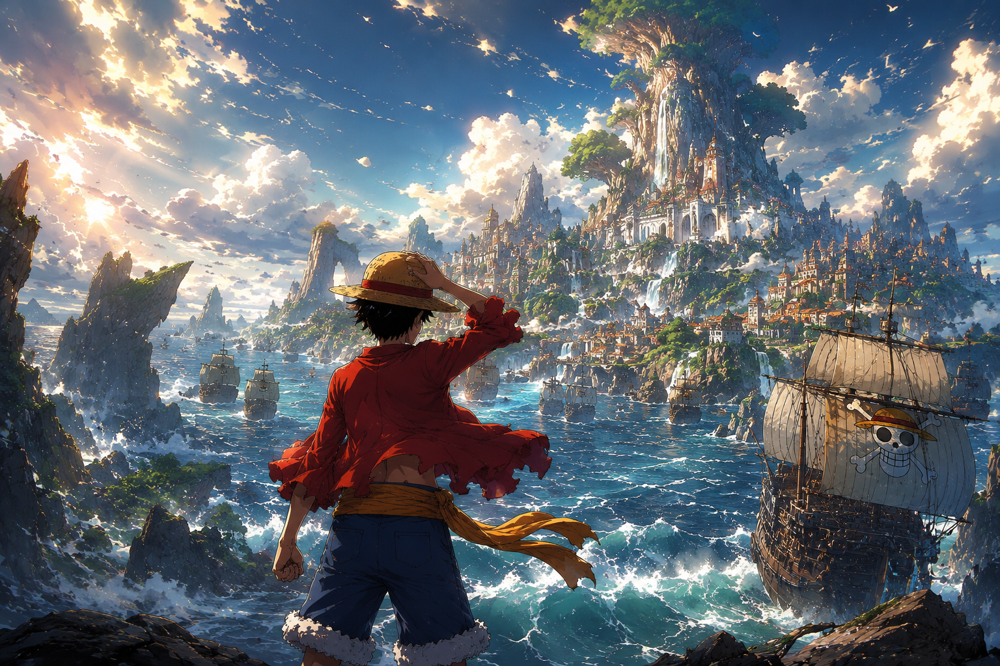

Crunchyroll anuncia lineup completo do Outono 2025: o que esperar da temporada
A Crunchyroll revelou o lineup completo da temporada de Outono 2025. Saiba o que vem aí, por que essa grade é importante e o que os fãs podem esperar.
Tudo que rola no universo anime e geek
Cobertura completa de anime, manga, games e cultura geek — direto das fontes, com a voz editorial que você já conhece.
Geradas pelo pipeline de IA e editadas pela redação Shonen Horizon.
A Crunchyroll revelou o lineup completo da temporada de Outono 2025. Saiba o que vem aí, por que essa grade é importante e o que os fãs podem esperar.
A saga que moldou gerações está chegando ao fim. Entenda o ritmo de lançamentos de 'One Piece' em 2025 e o que esperar desta reta final histórica.
A mangá de Yuki Tabata retorna com força total na Jump Giga. Entenda o que esperar dos novos capítulos e por que esse comeback é enorme para os fãs.
Hiro Mashima acelerou o ritmo e a nova minissérie de 'Fairy Tail' chega uma semana antes do previsto. Tudo sobre o retorno que os fãs esperavam.
Kyoto Animation confirma adaptação do mangá slice of life de John Tarachine, com direção de Taichi Ishidate e estreia prevista para 2027.
O compositor e pianista Yuji Ohno, criador do tema icônico de Lupin III, faleceu aos 84 anos no dia 4 de maio de 2026.
O mangá que quebrou recordes na Shonen Jump finalmente ganha adaptação animada com estreia confirmada para abril de 2027.
A estreia em abril de 2026 marca o retorno da tripulação depois de Egghead e reforça a nova cadência anual do anime.
O filme chegou à Crunchyroll em 30 de abril de 2026, abrindo espaço para análise visual, hype e recortes cinematográficos.
A continuação vai adaptar "Migração à Extinção Parte 2", mantendo o arco Culling Game no centro da história.

Uma boa pauta para falar sobre legado, passagem de tempo e o que fica depois do fim de uma grande série shonen.

O remake segue como uma das apostas mais interessantes para revisitar East Blue com outra linguagem visual.

O jogo mortal deixa de ser apenas sobrevivência e se transforma em uma guerra estratégica pelo futuro do mundo jujutsu.